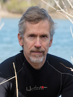
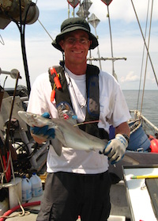
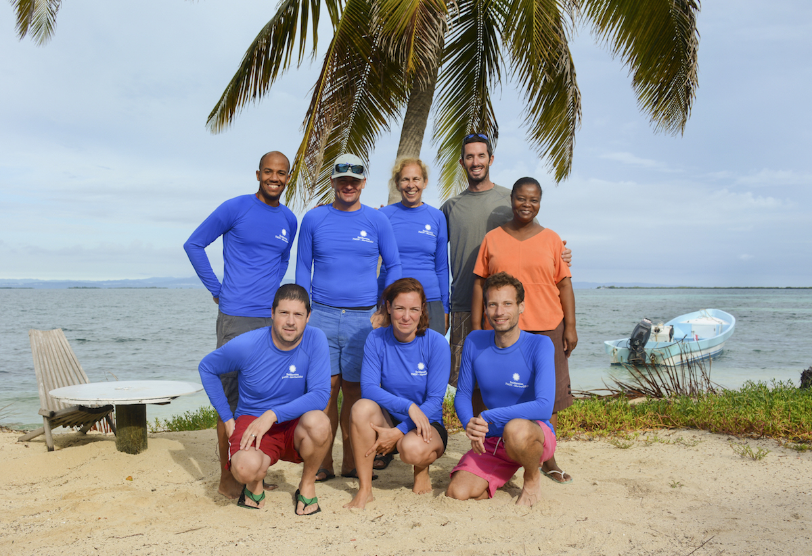
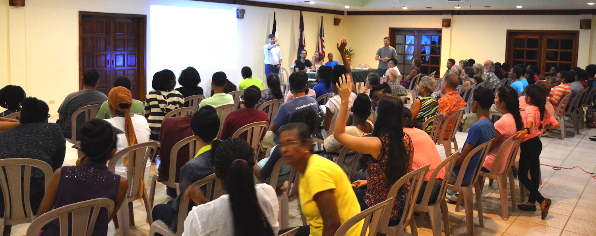
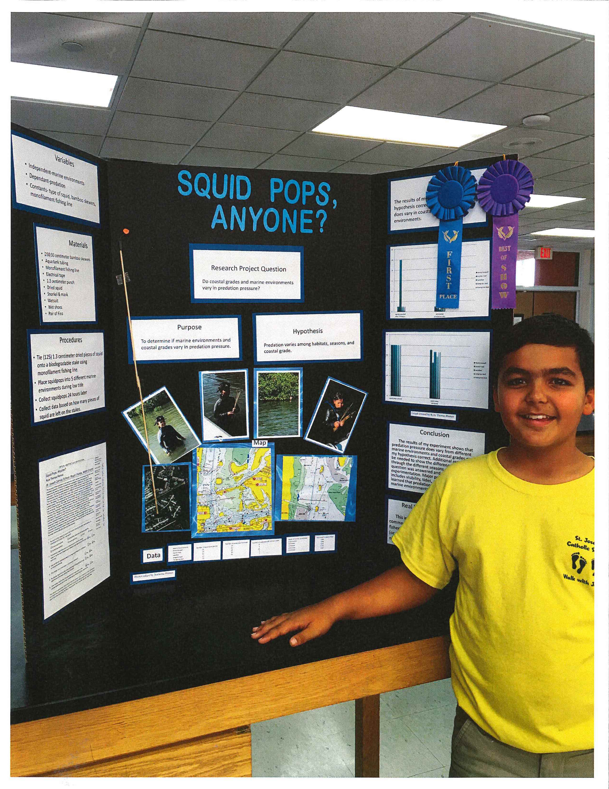
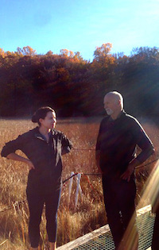
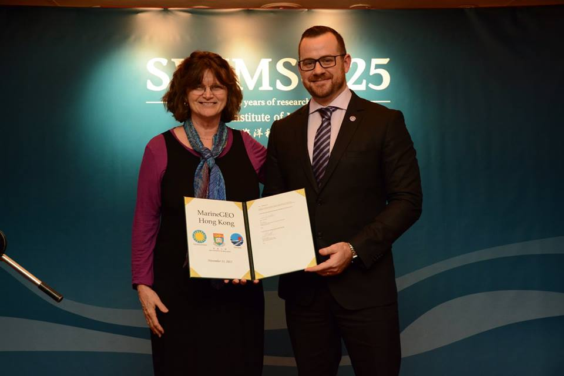

Director's Report
Dr. Emmett Duffy, Director of TMON
Dear Friends and Colleagues,
TMON and the MarineGEO program have had a busy summer and fall since our last (first!) newsletter in May. The program is rapidly gaining momentum and global visibility—and starting to bear tangible fruit, as detailed in this newsletter. I’d like to hit a few highlights here.
The world is awakening, suddenly it seems, to the inadequate state of the knowledge we need to protect and manage ocean life and ecosystems. Much effort and investment have gone into ocean observing in recent decades, with impressive results, but biology and especially biodiversity have been left behind. That is now changing, quickly. Over the last few years several national and global efforts have gathered steam to address the uncoordinated state of marine biodiversity observations. The Smithsonian’s TMON is emerging as a leader in this milieu. In November I attended the Group On Earth Observations (GEO) plenary meeting in Mexico City, along with a 50-member US delegation including Secretary of the Interior Sally Jewell and colleagues from NOAA and NASA, where we began stitching together the various interested parties and hammering out the outlines of a truly global Marine Biodiversity Observation Network. It’s an exciting time as the community begins to coalesce toward a common goal, and to align our science with the needs of conservation and management.
A central challenge in achieving such a global network is agreeing on research priorities and what needs to be measured to achieve them—the “Essential Biodiversity Variables” in the current parlance. MarineGEO has been working toward this goal from the outset by field-testing a range of observational and experimental protocols for understanding marine biodiversity and its role in coastal ecosystems. This biodiversity focus dovetails with a strong program of chemical and physical environmental observations, including establishment of NOAA sentinel sea site sea level monitoring stations at the all of the Smithsonian’s marine field stations. With help from the Smithsonian Grand Challenges Consortia, the TMON team launched a field campaign at the Carrie Bow Cay station in September. Building on the rich legacy of work by the Caribbean Coral Reef Ecosystems (CCRE) program, the team conducted intensive fish and benthic community surveys in reef, mangrove, seagrass, and sand-patch habitat using the standard protocols we are helping to disseminate with the Global Coral Reef Monitoring Network and Reef Life Survey program. The Belize campaign featured our first extensive deployment of standard assays we developed for measuring the feeding activity by fishes that is critical in maintaining coral dominance on reefs. One of these assays, the “squidpop”, was designed as a simple tool we hope to disseminate for students and citizen science, recently published in the open access journal PLoS One. And the crew capped off the campaign with a well-attended evening outreach event for our neighbors in the village of Dangriga. Similar activities are completed or underway at TMON’s other field sites at Bocas del Toro in Panama (STRI), Indian River in Florida (SMS) and the Rhode River in Maryland (SERC). MarineGEO is now launching into the Pacific with active planning for field campaigns in summer 2016 at partner sites in Kane 'ohe Bay, Hawai'i, the central coast of British Columbia, and eventually Tasmania.
To achieve the grand goals of a global network we need strong partners. Over the last few months MarineGEO has signed a Memorandum of Understanding with Hong Kong University, and is near doing so for the Hakai Institute in British Columbia, Canada. We have embarked on a partnership funded by the Australian Research Council with the University of Tasmania and expect to begin establishing our southernmost MarineGEO site there within the coming year. Many other partnership conversations are in progress—indeed we are working hard to balance the demand from prospective new partners with implementing MarineGEO research at our existing sites. A happy situation to be in.
At the heart of all we do are great people. We are fortunate to have attracted an outstanding cadre of staff and fellows to TMON and the MarineGEO program. Most recently, we’ve been joined by Mike Goodison, an experienced and multi-talented marine scientist, as our MarineGEO Technician at SERC—welcome Mike! Best wishes to all for a happy and healthy holiday season,
Emmett Duffy
Director, Tennenbaum Marine Observatories Network
Mike Goodison joins us as the MarineGEO tech at SERC
MarineGEO is delighted to welcome our newest technician to the TMON team at the Smithsonian Environmental Research Center. He joins his colleagues Dean Janiak from the Smithsonian Marine Station, Janina Seeman from the Smithsonian Tropical Research Institute's Bocas del Toro Research Station, and Ross Whippo from MarineGEO Central. Please join us in welcoming Mike aboard!
 Michael Goodison has been a technician at the Smithsonian Environmental Research Center since 2002, working in the Fish and Invertebrate Lab. He has been involved in numerous projects over the course of his fourteen years in the “Crab Lab”, including documenting and monitoring spring spawning runs of both alewife and blueback herring using DIDSON imaging sonar, tracking the movement, migration, and habitat usage of invasive blue catfish by surgically implanting acoustical tags in individual fish, and a blue crab stock-enhancement project that looked at the feasibility of enhancing local blue crab populations with hatchery reared juveniles. Mike received his M.S. degree from the University of Maryland, College Park in 2002, is a scientific certified scuba diver, and obtained his U.S. Coast Guard captain’s license (Master 50 Tons Inland and Great Lakes with Towing Endorsement) in 2005. Mike will coordinate and assist with MarineGEO research activities at SERC.
MarineGEO Post-docs Research Updates
All four MarineGEO post docs have been very busy with their research this summer. From bioacoustic measures of biodiversity to seasonal effects of predation, their work has stretched from the tropics of Belize to the temperate waters of the Chesapeake Bay. Here is a brief update on their progress:
Brian Cheng is examining whether predation rate is stronger in the tropics as opposed to the temperate zone. He has recently wrapped up field research measuring predation in Belize, Virginia, and Connecticut. Initial results were counter to expectations because predation was found to be a strong force at temperate as well as tropical sites! He is currently working out of Maryland (SERC) to process field samples and analyze the data. Pending results, Brian will be working in Panama during the spring/summer of 2016.
Over the past six months, Lisa Schile has almost completed the field work component of her research. She finished taking deep soil cores in the marshes, mangroves and seagrass beds in San Francisco Bay in California, Wachapreague, Virginia, and the Indian River Lagoon in Florida. She currently is processing the soil to quantify the soil carbon pools. Lisa continues to collect tidal water samples within marsh and mangrove channels at all of her sites to quantify dissolved carbon fluxes over tidal cycles. She also completed the teabag decomposition experiment in San Francisco, Virginia, and Maryland and is currently analyzing them to determine decomposition rates. In October, She deployed the last teabag plots within a mangrove and seagrass bed in Florida, which will be collected in January.
MarineGEO post-doctoral fellow Erica Staaterman joined us in August to begin her fellowship tenure. Erica will be examining acoustic habitats in the ocean and their relationship to biodiversity. She has been developing her project plan, getting to know the Chesapeake Bay ecosystem, and has collected some preliminary data. From January-March 2016, Erica will be at STRI collecting acoustic data alongside the rest of the MarineGEO team. From March onwards she will be conducting her research at SERC. She plans to explore several projects. An acoustic time-series – when combined with ongoing long-term data collection at SERC - will reveal relationships between acoustic activity and seasonal migrations of estuarine species. Acoustic recordings at oyster reef restoration sites in Harris Creek will be used to explore the process of recovery for these fragile ecosystems. Finally, she will test whether boat noise leads to an acute stress response in a suite of estuarine species through a series of playback experiments. This work will shed light on the extent to which estuarine species are affected by noise and whether they are able to acclimate to noisy environments. Check out a profile of Erica recently published in the SERC newsletter.
After having spent the first month behind his desk fine-tuning his project, applying for permits, and planning field trips, Simon Brandl has just returned from SMS Fort Pierce in Florida. During his week in Florida, he tested some of the methods he plans to employ during his big trip in the first half of 2016 to STRI in Panama. One of the questions he attempted to answer included how well his proposed fish and invertebrate collection method, via an underwater suction pump worked. In 2016, he will be travelling for the first half of the year, visiting field stations in Panama, Belize, Florida, North Carolina, Massachusetts, and Maine to set up his experiment. Besides sampling fish and micro-invertebrates, he will be building cages, scraping material of pilings, and monitoring predation.
Field Work

Experiments and observations are underway at TMON sites. MarineGEO staff
and partners have been busy conducting research in the field over the past year.
In addition to data captured at our sites in Maryland, Florida, Belize, and
Panama, we also traveled in teams to Belize and Florida to test new methods and
identify new sites for the network.
The TMON team poses
for a group photo (clockwise from back left: Justin Campbell; Scott Jones; Val
Paul; Zach Foltz; Martha Nichols; Ross Whippo; Janina Seemann; Dean Janiak).
Photo: D. Janiak
Carrie Bow Cay, Belize
In February 2015 TMON teams traveled to the Smithsonian's research station at Carrie Bow Cay in Belize to continue the long-term research projects and add new components. From September 16-30, 2015 at Carrie Bow Station in Belize, biologists, technicians, and dive staff from SMS, STRI, the SI Dive Office, and TMON/MarineGEO implemented and completed a full compliment of observational and experimental activities that currently form the basis of the MarineGEO field program. A total of six habitat types (fore reef, lagoonal reef, mangrove, seagrass, sand flats, and docks) were surveyed over three general regions (immediate vicinity of Carrie Bow, North, and South of Carrie Bow) for foundation species cover and recruitment, fish community (abundance, biomass, and diversity), invertebrate community composition (diver and photo surveys), and water quality (temperature, salinity, pH, etc.), depending on the specific habitat. Process assays including predation and herbivory experiments were deployed, and sessile invertebrate recruitment panels were retrieved from the field. Additionally, corals were tagged for long-term monitoring. The TMON team also had an opportunity to lead a "Science Cafe" public education event at the Pelican Resort in Dangriga, Belize. Many locals including students and families attended to hear presentations by MarineGEO scientists Scott Jones, Justin Campbell, Janina Seemann, Dean Janiak, and Ross Whippo. Staff of the resort praised the event as a "great success" and suggested that the "Science Cafe" could become a regular part of their community outreach initiatives.

TMON scientists present work by MarineGEO to the people of
Dangriga, Belize.
Photo: Z. Foltz
Fort Pierce, Florida
Matt Ogburn and Mike Goodison traveled to Ft. Pierce and worked with Dean Janiak to conduct fish surveys using Dual-Frequency Identification Sonar (DIDSON). The sonar produces high-resolution video images of fish in clear or turbid water. The sonar unit was deployed just below the surface from the bow of a small boat and pointed either directly in front or 90 degrees to the side depending on whether a habitat was fully submerged or was a shoreline. They conducted 50 m survey transects across or along soft sediment, seagrass, mangrove, dock, oyster reef and rubble habitats. Sonar videos will be processed to count the abundance and measure the size of fish encountered, and will be converted to biomass. The sonar surveys were designed and will be analyzed in similar ways to diver surveys in clear water habitats with the exception that species ID is unknown. This will allow for network-wide assessment of fish biomass and size structure across clear and turbid water habitats in the TMON network. Similar surveys were conducted in Chesapeake Bay during summer 2015.
Student Takes Squidpops To The Field!

Proud winner of his science fair, Kyle Ramos stands with his Squidpop research project!
MarineGEO Central was very excited to learn that students are conducting Squidpop Assays in the field! Kyle Ramos, a 6th grade student at St. Joseph Catholic School in Stuart, FL won first prize for his work with Squidpops at his school's science fair. Kyle worked with researcher Woody Lee at the Smithsonian Marine Station to implement his research project. In addition, his worked was awarded Best in Show, and as such he will be presenting his research at the regional science fair in February! Kyle deployed his 'pops in five different near-shore locations and found variable consumption rates of local predators depending on habitat type. We all wish Kyle the best of luck as he moves on to regionals!
MarineGEO Representation At Recent Meetings
MarineGEO researchers have been presenting their exciting work and results at scientific conferences and other meetings. If you've recently presented work associated with MarineGEO please let us know at: MarineGEO@si.edu. MarineGEO will have a presence at several upcoming meetings, including the Ocean Sciences Meeting in New Orleans, LA and the Mangrove & Macrobenthos Meeting in St. Augustine, FL (July 18-22, 2016).
Authors: Duffy E, Canonico G
Title: GEO BON Marine Biodiversity Observation Network Overview and Current Status
Meeting: Group on Earth Observations - XII Plenary & Mexico City Ministerial Summit, Mexico City, Mexico
Authors: Duffy E, Whippo R
Title: The MarineGEO Network: Integrated Ecological Observatories for Changing Marine Ecosystems
Meeting: American Academy of Underwater Sciences Symposium, Key West, Florida
Authors: Rubinoff B, Janiak D
Title: Soft-sediment biodiversity monitoring: Infaunal community variation in the Rhode River.
Meeting: CERF Conference, Portland, Oregon
Latest Publications
Duffy JE, Ziegler SL, Campbell JE, Bippus PM, Lefcheck JS (2015). Squidpops: A Simple Tool to Crowdsource a Global Map of Marine Predation Intensity. PLoS ONE. 10(11): e0142994. doi:10.1371/journal.pone.0142994
Chapters from the upcoming book “Methods in Molecular Biology”:
Leray M, Knowlton N. Visualizing patterns of marine eukaryotic diversity from metabarcoding data using QIIME
Bourlat S, Haenel Q, Leray M. Preparation of amplicon libraries for metabarcoding marine eukaryotes using the Illumina Mi-Seq: the dual-PCR method
Leray M, Haenel Q, Bourlat S. Preparation of amplicon libraries for metabarcoding marine eukaryotes using the Illumina Mi-Seq
Successful Grants For MarineGEO Scientists
MarineGEO researchers support their work largely through competitive grants, some offered through internal Smithsonian programs and some through external funders. If you have ideas for network- or team-based projects and would like to discuss your ideas or propose partnership before applying for grants, please contact us at: MarineGEO@si.edu. Congratulations to the following teams for their successfully funded proposals. Funded projects range from addressing network needs to supplementing postdoctoral research to helping launch new sites through research and education.
PI: Duffy JE, Murray MC
Title: Tennenbaum Marine Observatories Network Field Campaign at Carrie Bow Cay, Belize
Award: Level One Smithsonian Grand Challenges
Amount: $17,678
Description: TMON requested funding to: establish standardized, observational (monitoring) components of the MarineGEO core research program at Carrie Bow Cay; test new protocols and train SI scientists and technicians in their methods; collect the annual observational data about the foundational habitats and marine biodiversity surrounding them; and provide educational outreach experiences to visitors. This funding opportunity resulted in the Carrie Bow Field Trip.
PI: Miller W, Megonigal P
Title: A Scalable MarineGEO-TMON Information System and Design Standard: Using Existing Network of Sonde, pCO2, Weather and Tide Instruments/Data Streams
Award: Level One Smithsonian Grand Challenges
Amount: $13,330
Description: A central requirement for the successful and effective operation of the MarineGEO/TMON network is a Data Management System that enables users to collect, process, and analyze scientific data. These data must be properly curated from collection to archive, with appropriate annotation, metadata, standardization, and quality assurance and control (QA/QC) measures applied along the way. We propose using a structured relational database as the basis for a MarineGEO/TMON Data Information System. The system would maintain a central database structure for MarineGEO/TMON data, but with direct access to MarineGEO/TMON nodes and scientists, such that local data managers/scientists (who know their data best) can annotate and apply appropriate QA/QC protocols, and access the data for analyses.
PI: Hagedorn M
Title: Next Gen Marine Science
Award: Smithsonian Youth Access Award
Amount:
Description: To support the use of an intensive STEM program to engage native and non-native high school students from at risk schools in field marine science research projects centered on monitoring biodiversity of coral reefs in Hawai'i, Next Generation Marine Science will: expand upon an existing K-12 marine science program at Hawai’i Institute of Marine Biology (HIMB); offer curricula and immersive hands-on training and research opportunities in marine science technology; reveal to students the current status of invertebrates in Kane 'ohe Bay; and expose them to the exciting intellectual and adventurous field activities that are the foundation of a career in marine science.
PI: Leray M, Knowlton N, Duffy JE
Title:
Award: Consortium for the Barcode of Life (CBOL) Grant
Amount:$15,500
Description: Our efforts to measure and therefore predict the cascading effects of global environmental change have largely focused on small subsets of communities, typically the larger, conspicuous, and taxonomically well-documented groups. This approach disregards the microscopic animals (<2mm) that play a fundamental role in biochemical and nutrient cycling and which comprise the vast majority of diversity in the sea. The Tennenbaum Marine Observatories Network’s (TMON) MarineGEO initiative aims to quantify long-term changes in biodiversity and its consequences for ecosystems across the globe. To do so, we are using standardized sampling that combines Autonomous Reef Monitoring Systems (ARMS), molecular methods, and digital imagery to directly compare whole community profiles (integrating across all size class) through time and space. Objectives are to (1) supplement the library of DNA barcodes for key taxa at the TMON core sites, (2) provide DNA barcodes to identify OTUs detected via metabarcoding, (3) quantify latitudinal gradients and successional patterns in cryptobenthic diversity among taxa and size fractions, and 4) to produce digitally associated barcodes, physical vouchers, and photographic vouchers for these poorly known organisms.
PI: Edgar G, Jordan A, Knott, N, Barrett N, Howe S, Holmes T, Duffy JE
Title: Improving prediction of rocky reef ecosystem responses to human impacts
Award: Australian Research Council: Linkage Projects
Amount:$900,000
Description: The project aims to add a new functional dimension to the understanding of inshore ecosystems, facilitating improved management of our living marine heritage. Project goals are to: extend huge field datasets on the density and distribution of thousands of marine fishes, invertebrates and macro-algae; combine these data using recent advances in quantitative ecological modeling to describe transfer of biomass between species at hundreds of sites with primary focus on southern Australia; and provide site-level indices of major food web processes that, when combined with ‘before, after, control, impact’ data, allow improved prediction of ecological consequences of fishing, climate change, pest outbreaks, and pollution.
Progress For MarineGEO Partnerships
Hakai Institute

SERC scientist
Grace Cott shows Eric Peterson around the field.
Photo: J. McMillan
Eric Peterson and Christina Munck of the Hakai Institute visited with MarineGEO representatives at the National Museum of Natural History and Smithsonian Environmental Research Center in early November. The pair is enthusiastic about joining the MarineGEO network and views the network as an excellent match to their ecological research priorities. Along with touring various research and education assets at Smithsonian facilities, the group discussed possible MarineGEO roles for the Hakai Institute within the British Columbia region and in the network more broadly. The Smithsonian Institution and Hakai Institute are developing a memorandum of understanding to formalize the budding partnership.
Hong Kong

On November 13th, 2015 Nancy Knowlton and Jeremy Jackson attended the
25th Anniversary Celebration for the Swire Institute of Marine Science of the University of Hong Kong
(SWIMS-HKU). The event was attended by SWIMS-HKU faculty, students and alumni as
well as Professor Andy Hor (VP Research - HKU), Ms. Laura Lau (Swire Trust), and
former Smithsonian MSN post-docs David Baker (HKU) and Ryuji Machida (Academia
Sinica). During the evening, Nancy introduced MarineGEO and welcomed SWIMS-HKU
as a partner site with a ceremonial signing of a memorandum of understanding.
This agreement will allow for future partnership with HKU focused on the
monitoring of Hong Kong's coastal waters.
Nancy Knowlton and Jeremy Jackson with the MarineGEO-HKU Memorandum of Understanding.
For updates on MarineGEO activities visit us on the web, on Twitter or Facebook. Send any questions or comments to MarineGEO@si.edu.
Stay tuned!